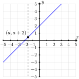
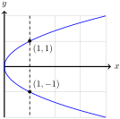

In nearly every branch of mathematics, functions are the primary objects of study. Functions provide a robust language for describing relationships between sets, and serve as the basic building blocks for modern development of algebra, geometry, trigonometry, calculus, and beyond. We develop techniques for analyzing and visualizing functions that are foundational in subsequent mathematics courses and also applicable outside of mathematics — in science, technology, and engineering— to model the behavior of systems.
Subsection2.1.1Algebraic Functions
Definition2.1.1.Function.
Assume \(A\) and \(B\) are sets. A function from \(A\) to \(B\), written \(f \colon A \to B\text{,}\) is a rule that assigns to each element \(x \in A\) a unique element \(f(x) \in B\text{.}\)
The set \(A\) is the domain of \(f\text{.}\) The domain of \(f\) is the set of all allowable input values to the function \(f\text{.}\)
The set \(B\) is the codomain of \(f\text{.}\) The codomain of \(f\) is the set that contains all possible output values of \(f\text{.}\)
The range of \(f\) is the set of all possible output values
\begin{equation*}
f(A) = \left\{f(x) \;\middle\vert\; x \in A\right\}.
\end{equation*}
While functions are defined for arbitrary sets, we will restrict our attention to functions of the form \(f \colon A \to \R\text{,}\) where \(A\) is some subset of \(\R\text{.}\) By convention, we will use the variable \(x\) to stand for some input value from the domain of \(f\text{.}\)
It is common to refer to \(f(x)\) —read "\(f\) of \(x\)" — as the value of \(f\) at \(x\) or the image of \(x\) under \(f\). We will normally use the variable \(y\) to stand for some output value in the range of \(f\text{.}\) This relationship is made explicit by writing \(y = f(x)\) or saying that \(y\) is a function of \(x\text{.}\) Generally, the value of \(y\) is determined by a choice of a specific \(x \in A\text{.}\) We call \(x\) the independent variable and \(y\) the dependent variable.
When we start from two sets \(A\) and \(B\) and write down a rule that assigns to each \(x \in A\) an element \(f(x) \in B\text{,}\) we are defining a function explicitly. Most interesting subsets of the real numbers are simply too large to provide an explicit definition. To get around this problem, we often rely on algebraic expression involving a variable, \(x\text{,}\) to define our functions. These expressions are built using the operations of addition, subtraction, multiplication, division, and roots, and are called algebraic functions.
When we write down an equation like
\begin{equation*}
y = \frac{1}{x}
\end{equation*}
we are defining a function implicitly. We have not explicitly stated the domain of the function, so this function has an implied domain, that consists of all real numbers for which the expression makes sense.
Example2.1.2.
Find the implied domain and the range of the implicit function \(y = 1/x\text{.}\)
Solution.
Since the ratio \(1/x\) makes sense for all numbers except \(0\text{,}\) the implied domain is the set
\begin{equation*}
\left\{x \in \R \;\middle\vert\; x \neq 0\right\}.
\end{equation*}
The range of this function is the set of real numbers \(y\) that can be written as \(1/x\) for some non-zero real number \(x\text{.}\) If \(y\) is any non-zero real number, then we can write
\begin{equation*}
y = \frac{1}{\frac{1}{y}}.
\end{equation*}
Therefore the range of the implicit function \(y = 1/x\) is the set of all non-zero real numbers
\begin{equation*}
\left\{y \in \R \;\middle\vert\; y \neq 0\right\}.
\end{equation*}
Example2.1.3.
Find the domain and range of the function \(f(x) = 3x + 7\text{.}\)
Solution.
The domain of \(f\) is \(\R\) because for any real number \(x\text{,}\)\(3x + 7\) is always well-defined. The codomain of this function is also \(\R\) because for any real number \(x\text{,}\)\(3x + 7\) will also be a real number. To find the range, we want to describe the set
\begin{equation*}
\left\{3x + 7 \;\middle\vert\; x \in \R\right\}.
\end{equation*}
We can show this is \(\R\) by showing that for every real number \(y\text{,}\) we can find a number \(x\) such that \(3x + 7 = y\text{.}\) We simply solve this equation for \(y\) in terms of \(x\)
\begin{align*}
3x + 7 \amp = y \amp\amp \text{Subtract}\ 7\ \text{from both sides}\\
3x \amp = y - 7 \amp\amp \text{Divide both sides by}\ 3\\
x \amp = \frac{y - 7}{3}.
\end{align*}
For example, if \(y = 10\text{,}\) then this formula tells us this corresponds to the input
Find the domain and range of the function \(f(x) = x^2\text{.}\)
Solution.
The domain of \(f\) is \(\R\) because for any real number \(x\text{,}\)\(x^2 = x \times x\) is always well-defined. The codomain of this function is also \(\R\) because for any real number \(x\text{,}\)\(x^2\) is a real number. To find the range, we want to describe the set
\begin{equation*}
\left\{x^2 \;\middle\vert\; x \in \R\right\}.
\end{equation*}
Given a real number \(y\text{,}\) we want to determine whether the equation \(y = x^2\) can be solved for \(y\text{.}\)
When \(y = 0\text{,}\) there is exactly one solution: \(x = 0\text{.}\)
When \(y > 0\text{,}\) there are two solutions: \(x = \sqrt{y}\) and \(x = -\sqrt{y}\text{.}\)
When \(y \lt 0\text{,}\) there are no solutions because the square root of a negative number is not a real number.
This tells us the range of our function is the interval \([0, \infty)\text{.}\)
Subsection2.1.2Comparing Functions
Whenever we define a new mathematical object, it is important to understand when two objects are the same. For functions with the same domain and codomain, we measure equality based on the output.
Definition2.1.5.Equality of Functions.
Two functions \(f \colon A \to B\) and \(g \colon A \to B\) are equal if for every \(x \in A\text{,}\)\(f(x) = g(x)\text{.}\)
We write \(f = g\) to indicate that \(f\) and \(g\) represent the same function.
Example2.1.6.
The functions \(f,g \colon \R \to \R\) defined by \(f(x) = \sqrt{x^2}\) and \(g(x) = \abs{x}\) are equal.
Solution.
The functions \(f\) and \(g\) have the same domain and codomain, so it makes sense to compare these functions. For every real number \(x \geq 0\)
Since these are not the same, we conclude \(f \neq g\text{.}\)
Subsection2.1.3Graphing Functions
The ability to visualize a function often provides an immense amount of insight into how the function behaves. The graph of a function is defined in a manner similar to the graph of an equation.
Definition2.1.8.Graph of a Function.
Assume \(A \subseteq \R\text{.}\) The graph of a function \(f \colon A \to \R\) is the set of points
\begin{equation*}
\left\{(x, f(x))\;\middle\vert\; x \in A\right\} \subseteq \R^2
\end{equation*}
When the function is implicitly defined by an equation in the variables \(x\) and \(y\text{,}\) the Graph of an Equation will coincide with the Graph of a Function. While most of the functions we consider will be defined by an equation in the variables \(x\) and \(y\text{,}\) it is not the case that all equations in \(x\) and \(y\) define \(y\) as a function of \(x\text{.}\)
Theorem2.1.9.The Vertical Line Test.
An equation in the variables \(x\) and \(y\) is defines \(y\) as a function of \(x\) if and only if every vertical line intersects the graph of the relation in at most one point.
Example2.1.10.
Consider the function \(f \colon \R \to \R\) defined by the rule \(f(x) = x + 2\text{.}\)
\begin{equation*}
\left\{(a,y) \;\middle\vert\; y \in \R\right\},
\end{equation*}
and the graph of \(f\) is the set
\begin{equation*}
\left\{(x, x + 2) \;\middle\vert\; x \in R \right\}.
\end{equation*}
To say these graphs intersect is to say there is a point \((x,y)\) in the intersection of these two sets. The condition for membership on the graph of \(x = a\) determines the \(x\) value of such a point and the definition of the graph of \(f\) determines the \(y\)-coordinate:
\begin{equation*}
y = x + 2 = a + 2\text{.}
\end{equation*}
This tells us the line \(x = a\) intersects the graph of \(f\) at the single point \((a,a+2)\text{.}\)
(b)
Verify that \(f\) is a function visually.
Solution.
It is simpler to see that if we draw any vertical line to the right of the \(y\)-axis, then there is exactly one point of intersection with the graph of \(y = x+2\text{.}\)

Figure2.1.11.The graph \(y = x + 2\) and \(y = a\text{.}\)
Example2.1.12.
The equation \(x = y^2\) does not define \(y\) as a function of \(x\text{.}\)
Solution.
Recall that for every positive number \(x\text{,}\) there are always two square roots: \(\sqrt{x}\) and \(-\sqrt{x}\text{.}\) This tells us the ordered pairs \((x, \sqrt{x})\) and \((x, -\sqrt{x})\) both satisfy the equation \(x = y^2\) For example, the ordered pairs \((1,1)\) and \((1,-1)\) satisfy
Since the definition a Function requires that each element of the domain corresponds to exactly one element of the codomain, we see this cannot be a function. That is, equation \(x = y^2\) fails the The Vertical Line Test.

Figure2.1.13.The graph of the equation \(x = y^2\) and the line \(x = 1\text{.}\)
Exercises2.1.4Exercises
1.
For each of the following functions, find the implied domain, codomain, and range.
(a)
\(f(x) = \sqrt{x}\)
(b)
\(g(x) = \frac{1}{x}\)
(c)
\(h(x) = \abs{x}\)
2.
Evaluate the function at the given value.
(a)
\(f(x) = 3x^2 + 2x - 7\text{;}\)\(x = 2\text{.}\)
(b)
\(g(x) = x - \sqrt{x} + \frac{7}{x}\text{;}\)\(x = 49\text{.}\)